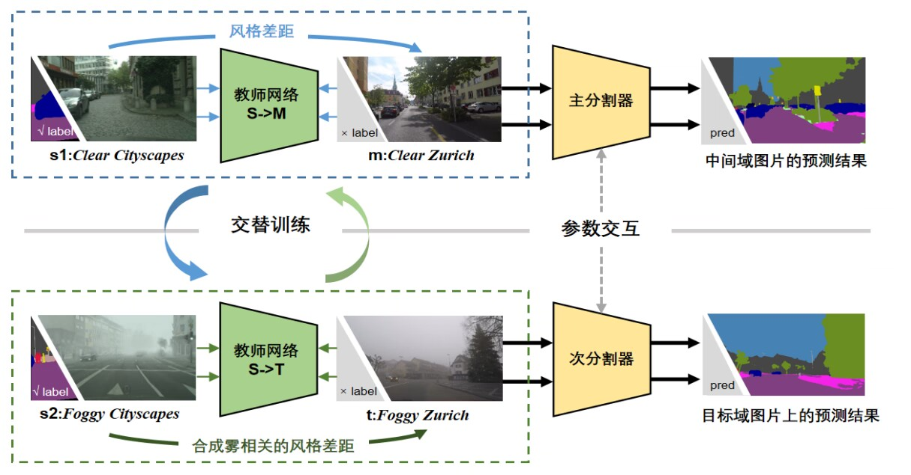

DtFormer: 基于自训练范式的雾天场景鲁棒语义分割算法
程子洋 of WHU、刘一澎 of LZU、李博文 of HUST

在高等级自动驾驶的底层架构中，一个适应于各种天气条件的感知系统是必不可少的，而视觉语义分割技术是构建此类系统的重要组成部分。目前，大多数语义分割模型是在清晰的视觉环境下训练的，很少有模型能够考虑到恶劣天气如雾天对性能的影响。DtFormer正是为解决这一挑战而设计，它是一个基于多层次教师自训练的雾天场景鲁棒语义分割算法，能够显著提升模型在雾天等恶劣天气条件下的表现。
技术背景与挑战
雾天场景语义分割(SFSS)是一个特别具有挑战性的问题，因为雾造成的图像模糊增加了识别难度，且相关数据标注成本高昂。尽管使用领域自适应技术可以从清晰场景迁移到雾天场景，但由于雾影响导致的图像质量下降和不同城市间的风格差异，使得现有方法的效果并不理想。DtFormer通过引入中间域来解耦域间隙，逐步优化雾天场景的语义分割效果，展示出优异的抗干扰性能。
结构概览
- configs: 存放各种域适应配置文件，包括数据增强和迁移学习策略。
- demo: 提供实际应用示例，演示域适应图像分割的实现。
- learn: 包含学习和实验相关的脚本。
- mmseg: 框架的核心模块，涵盖 API、数据集处理、模型定义等。
- pretrained: 存放预训练模型和提示信息。
- tools: 包括数据集转换、度量学习、测试时增强 (TTA) 等实用工具。
核心功能
域适应图像分割: 处理不同域间的图像分割问题，采用无监督、半监督和自监督学习策略。强大的数据处理: 支持广泛的数据处理和增强技术，以提升模型在新域的表现。
DtFormer采用了一种创新的多层次教师自训练方法，旨在通过拆解域差距，促进带标签清晰源域中的分割知识向无标签目标雾域的有效迁移。该算法设计了四个关键域：带标签清晰源域、带标签合成雾源域、无标签中间域和无标签雾域，并在这些域中使用两种类型的分割器：学生分割器和教师分割器，以进行知识迁移和增强学习。
- 分割器配置：DtFormer配置了两套分割器，包括两个学生分割器和两个教师分割器。学生分割器由一个主分割器（最终发布的模型）和一个次分割器组成，而教师分割器负责在无标签的中间域和目标域生成伪标签，指导学生分割器的训练。
- 域适应处理：主分割器与中间域教师分割器组成一组，处理从清晰源域到中间域的迁移；次分割器与目标域教师分割器组成另一组，处理从合成雾源域到目标雾域的迁移。这种分组配置确保了两个处理流程之间的梯度不会相互干扰。
- 交替训练与信息交互：为了最大化学习效果，DtFormer实施了交替训练策略。在奇数次迭代中，主要执行清晰源域到中间域的学习；在偶数次迭代中，执行合成雾源域到目标雾域的学习。此外，训练开始时，主分割器和次分割器通过指数移动平均（EMA）方式接收来自上一次迭代的信息，保证信息的连续性和训练的稳定性。
训练 Pipeline
DtFormer利用四个不同的数据域进行训练：带标签清晰源域 \(S\)、带标签合成雾源域 \(\overline{S}\)、无标签中间域 \(\mathcal{M}\) 和无标签雾域 \(T\)。通过这种多层次教师自训练的方法，DtFormer旨在拆解域差距，并有效地将源域中的知识迁移至目标雾域。培训的组织结构如下：
- 组织结构：主分割器 \(F_s\) 和中间域教师 \(T_m^s\) 以及次分割器 \(F_s^1\) 和目标域教师 \(T_t^t\) 分别组成两个训练小组，专注于处理不同的域迁移任务：\(S \rightarrow \mathcal{M}\) 和 \(\overline{S} \rightarrow T\)。
- 交替训练与信息交互：为避免梯度干扰，采用交替训练策略。奇数次迭代专注于 \(S \rightarrow \mathcal{M}\)，偶数次迭代专注于 \(\overline{S} \rightarrow T\)。此外，主分割器和次分割器在训练初期通过指数移动平均（EMA）形式接收前一迭代的信息，确保信息的连续性和学习的稳定性。
专利和软著
我们也已为本作品申请了一项国家发明专利与一项软件著作权（均在审核中）: